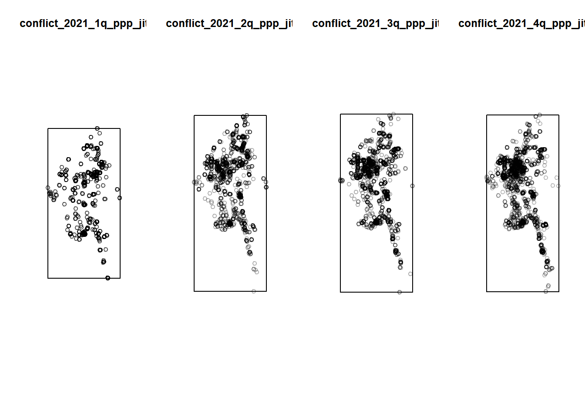
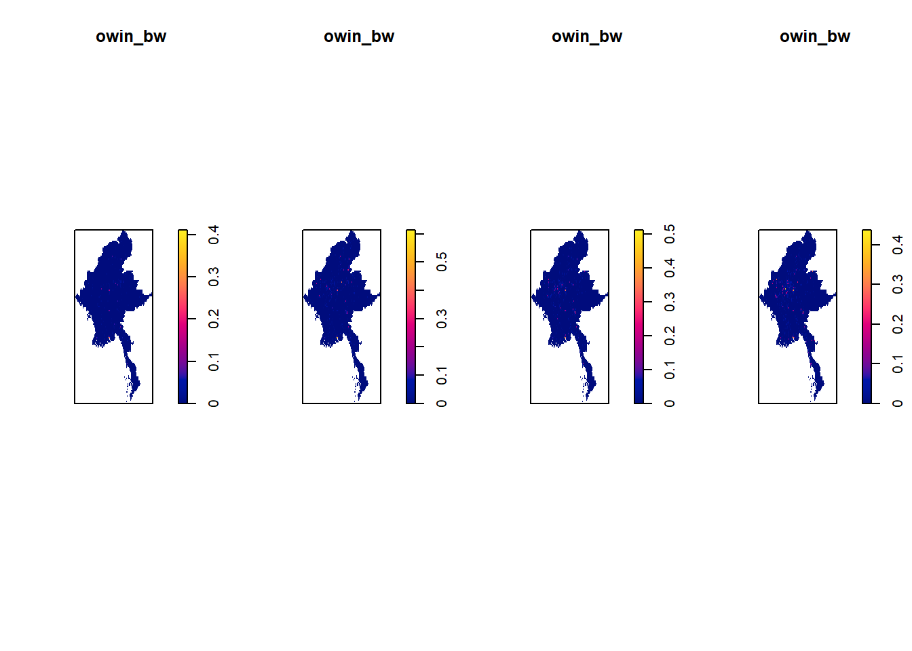
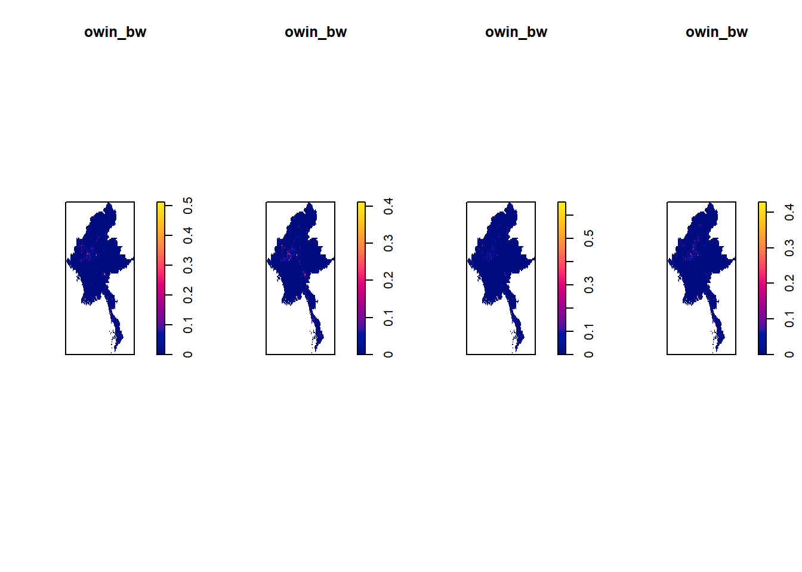
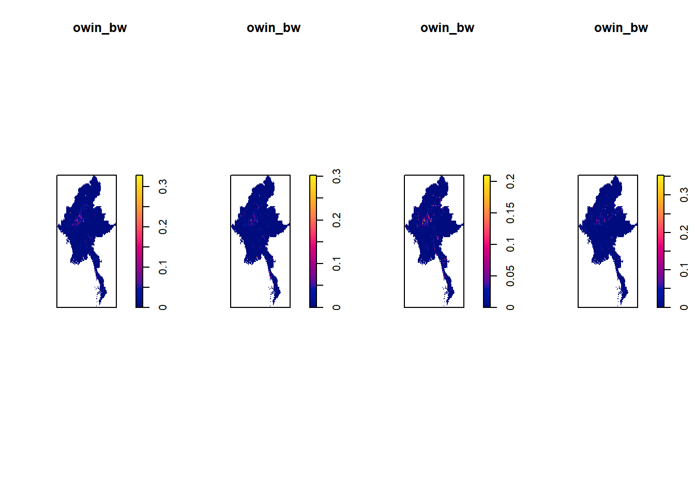
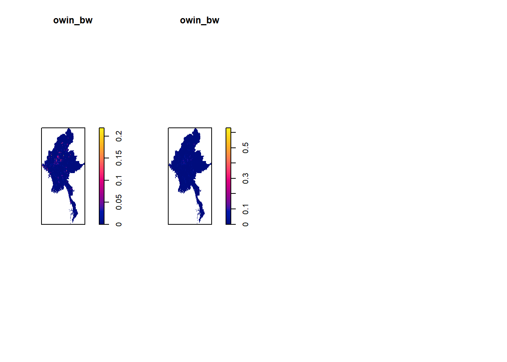
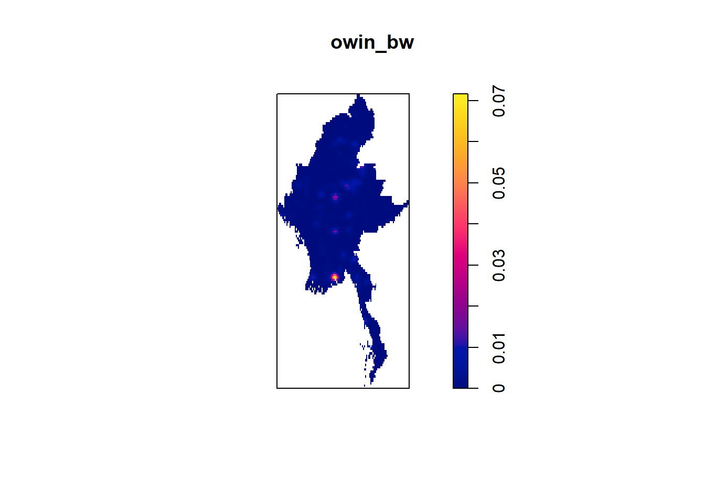
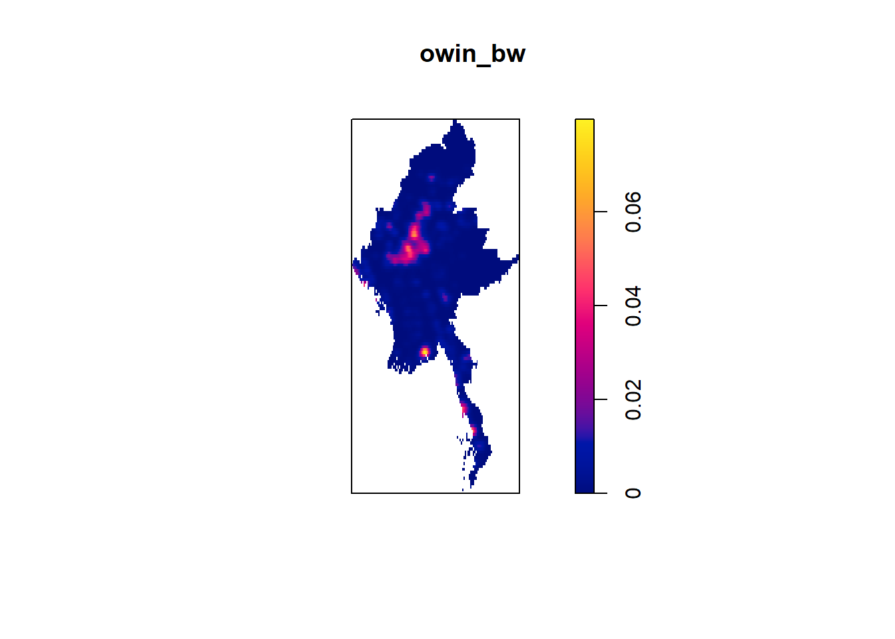
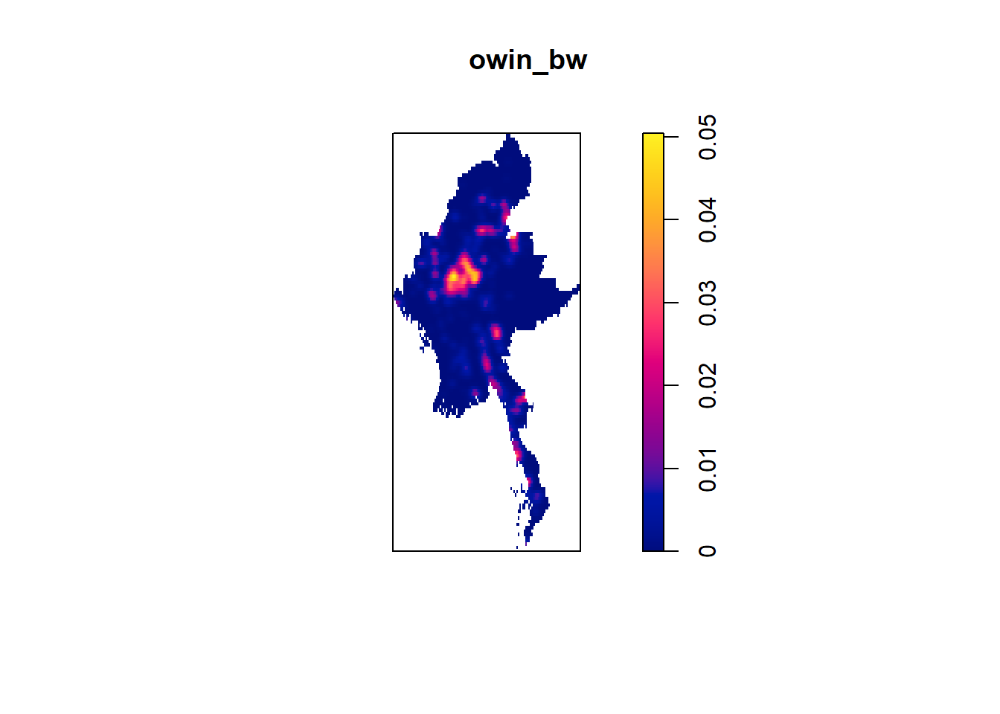
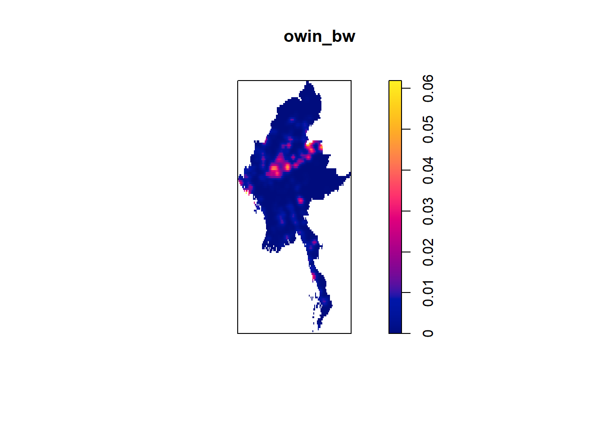

pacman::p_load(sf, raster, spatstat, tmap, tidyverse, devtools, sp, smoothr, viridis)Take Home Assignment 1
1.0 Introduction
2.0 Importing Data
2.1 Importing polygon feature data - boundary data
I edited the coordinates to fit Myanmar.
boundary_data_sf <- st_read(dsn = "data", layer = "mmr_polbnda2_adm1_250k_mimu_1") %>%
st_transform(crs=32647)Reading layer `mmr_polbnda2_adm1_250k_mimu_1' from data source
`C:\Nathania02\IS415-GAA\Take-home_Ex\Take-home_Ex01\data'
using driver `ESRI Shapefile'
Simple feature collection with 18 features and 6 fields
Geometry type: MULTIPOLYGON
Dimension: XY
Bounding box: xmin: 92.1721 ymin: 9.696844 xmax: 101.17 ymax: 28.54554
Geodetic CRS: WGS 842.2 Importing conflict data
Converted the latitude and longitude to standardized the projection system
acled_data_sf <- read_csv("data/2021-01-01-2024-06-30-Southeast_Asia-Myanmar.csv") %>%
st_as_sf(coords = c(
"longitude", "latitude"), crs=4326) %>%
st_transform(crs = 32647) %>%
mutate(event_date = dmy(event_date))3.0 Data Wrangling
Creating another column “quarter” so that I can split them up into quarters for KDE plot. I also filtered the event types - Battles, Strategic developments, Violence against civilians and Explosion/Remote violence. I then
acled_data_quarter_sf <- acled_data_sf %>%
mutate(quarter = quarter(event_date, with_year=TRUE),
year = year(event_date),
quarter_year = paste(year, quarter, sep = "Q"))
conflict_events_sf <- acled_data_quarter_sf %>%
filter(event_type %in% c("Battles", "Strategic developments", "Violence against civilians", "Explosion/Remote violence"))
write_rds(conflict_events_sf, "data/rds/conflict_events_sf.rds")conflict_events_sf <- read_rds("data/rds/conflict_events_sf.rds")3.1 Myanmar Boundaries
plot(st_geometry(boundary_data_sf))
Group the dataset based on quarterly.
conflict_2021_1q <- conflict_events_sf[conflict_events_sf$quarter == 2021.1, ]
conflict_2021_2q <- conflict_events_sf[conflict_events_sf$quarter == 2021.2, ]
conflict_2021_3q <- conflict_events_sf[conflict_events_sf$quarter == 2021.3, ]
conflict_2021_4q <- conflict_events_sf[conflict_events_sf$quarter == 2021.4, ]
conflict_2022_1q <- conflict_events_sf[conflict_events_sf$quarter == 2022.1, ]
conflict_2022_2q <- conflict_events_sf[conflict_events_sf$quarter == 2022.2, ]
conflict_2022_3q <- conflict_events_sf[conflict_events_sf$quarter == 2022.3, ]
conflict_2022_4q <- conflict_events_sf[conflict_events_sf$quarter == 2022.4, ]
conflict_2023_1q <- conflict_events_sf[conflict_events_sf$quarter == 2023.1, ]
conflict_2023_2q <- conflict_events_sf[conflict_events_sf$quarter == 2023.2, ]
conflict_2023_3q <- conflict_events_sf[conflict_events_sf$quarter == 2023.3, ]
conflict_2023_4q <- conflict_events_sf[conflict_events_sf$quarter == 2023.4, ]
conflict_2024_1q <- conflict_events_sf[conflict_events_sf$quarter == 2024.1, ]
conflict_2024_2q <- conflict_events_sf[conflict_events_sf$quarter == 2024.2, ]conflict_2021_1q_spatial <- as_Spatial(conflict_2021_1q)
conflict_2021_2q_spatial <- as_Spatial(conflict_2021_2q)
conflict_2021_3q_spatial <- as_Spatial(conflict_2021_3q)
conflict_2021_4q_spatial <- as_Spatial(conflict_2021_4q)
conflict_2022_1q_spatial <- as_Spatial(conflict_2022_1q)
conflict_2022_2q_spatial <- as_Spatial(conflict_2022_2q)
conflict_2022_3q_spatial <- as_Spatial(conflict_2022_3q)
conflict_2022_4q_spatial <- as_Spatial(conflict_2022_4q)
conflict_2023_1q_spatial <- as_Spatial(conflict_2023_1q)
conflict_2023_2q_spatial <- as_Spatial(conflict_2023_2q)
conflict_2023_3q_spatial <- as_Spatial(conflict_2023_3q)
conflict_2023_4q_spatial <- as_Spatial(conflict_2023_4q)
conflict_2024_1q_spatial <- as_Spatial(conflict_2024_1q)
conflict_2024_2q_spatial <- as_Spatial(conflict_2024_2q)
boundary <- as_Spatial(boundary_data_sf)conflict_2021_1q_sp <- as(conflict_2021_1q_spatial, "SpatialPoints")
conflict_2021_2q_sp <- as(conflict_2021_2q_spatial, "SpatialPoints")
conflict_2021_3q_sp <- as(conflict_2021_3q_spatial, "SpatialPoints")
conflict_2021_4q_sp <- as(conflict_2021_4q_spatial, "SpatialPoints")
conflict_2022_1q_sp <- as(conflict_2022_1q_spatial, "SpatialPoints")
conflict_2022_2q_sp <- as(conflict_2022_2q_spatial, "SpatialPoints")
conflict_2022_3q_sp <- as(conflict_2022_3q_spatial, "SpatialPoints")
conflict_2022_4q_sp <- as(conflict_2022_4q_spatial, "SpatialPoints")
conflict_2023_1q_sp <- as(conflict_2023_1q_spatial, "SpatialPoints")
conflict_2023_2q_sp <- as(conflict_2023_2q_spatial, "SpatialPoints")
conflict_2023_3q_sp <- as(conflict_2023_3q_spatial, "SpatialPoints")
conflict_2023_4q_sp <- as(conflict_2023_4q_spatial, "SpatialPoints")
conflict_2024_1q_sp <- as(conflict_2024_1q_spatial, "SpatialPoints")
conflict_2024_2q_sp <- as(conflict_2024_2q_spatial, "SpatialPoints")
boundary_sp <- as(boundary, "SpatialPolygons")conflict_2021_1q_ppp <- as.ppp(st_coordinates(conflict_2021_1q), st_bbox(conflict_2021_1q))Warning: data contain duplicated pointsconflict_2021_2q_ppp<- as.ppp(st_coordinates(conflict_2021_2q), st_bbox(conflict_2021_2q))Warning: data contain duplicated pointsconflict_2021_3q_ppp <- as.ppp(st_coordinates(conflict_2021_3q), st_bbox(conflict_2021_3q))Warning: data contain duplicated pointsconflict_2021_4q_ppp <- as.ppp(st_coordinates(conflict_2021_4q), st_bbox(conflict_2021_4q))Warning: data contain duplicated pointsconflict_2022_1q_ppp <- as.ppp(st_coordinates(conflict_2022_1q), st_bbox(conflict_2022_1q))Warning: data contain duplicated pointsconflict_2022_2q_ppp<- as.ppp(st_coordinates(conflict_2022_2q), st_bbox(conflict_2022_2q))Warning: data contain duplicated pointsconflict_2022_3q_ppp <- as.ppp(st_coordinates(conflict_2022_3q), st_bbox(conflict_2022_3q))Warning: data contain duplicated pointsconflict_2022_4q_ppp <- as.ppp(st_coordinates(conflict_2022_4q), st_bbox(conflict_2022_4q))Warning: data contain duplicated pointsconflict_2023_1q_ppp <- as.ppp(st_coordinates(conflict_2023_1q), st_bbox(conflict_2023_1q))Warning: data contain duplicated pointsconflict_2023_2q_ppp<- as.ppp(st_coordinates(conflict_2023_2q), st_bbox(conflict_2023_2q))Warning: data contain duplicated pointsconflict_2023_3q_ppp <- as.ppp(st_coordinates(conflict_2023_3q), st_bbox(conflict_2023_3q))Warning: data contain duplicated pointsconflict_2023_4q_ppp <- as.ppp(st_coordinates(conflict_2023_4q), st_bbox(conflict_2023_4q))Warning: data contain duplicated pointsconflict_2024_1q_ppp <- as.ppp(st_coordinates(conflict_2024_1q), st_bbox(conflict_2024_1q))Warning: data contain duplicated pointsconflict_2024_2q_ppp<- as.ppp(st_coordinates(conflict_2024_2q), st_bbox(conflict_2024_2q))Warning: data contain duplicated pointsRemove the duplicated values from each quarter each year
par(mfrow=c(1, 4))
sum(multiplicity(conflict_2021_1q_ppp) > 1)[1] 493conflict_2021_1q_ppp_jit <- rjitter(conflict_2021_1q_ppp, retry=TRUE, nsim=1, drop=TRUE)
plot(conflict_2021_1q_ppp_jit)
sum(multiplicity(conflict_2021_2q_ppp) > 1)[1] 1822conflict_2021_2q_ppp_jit <- rjitter(conflict_2021_2q_ppp, retry=TRUE, nsim=1, drop=TRUE)
plot(conflict_2021_2q_ppp_jit)
sum(multiplicity(conflict_2021_3q_ppp) > 1)[1] 1541conflict_2021_3q_ppp_jit <- rjitter(conflict_2021_3q_ppp, retry=TRUE, nsim=1, drop=TRUE)
plot(conflict_2021_3q_ppp_jit)
sum(multiplicity(conflict_2021_4q_ppp) > 1)[1] 2041conflict_2021_4q_ppp_jit <- rjitter(conflict_2021_4q_ppp, retry=TRUE, nsim=1, drop=TRUE)
plot(conflict_2021_4q_ppp_jit)
sum(multiplicity(conflict_2022_1q_ppp) > 1)[1] 1918conflict_2022_1q_ppp_jit <- rjitter(conflict_2022_1q_ppp, retry=TRUE, nsim=1, drop=TRUE)
plot(conflict_2022_1q_ppp_jit)
sum(multiplicity(conflict_2022_2q_ppp) > 1)[1] 1989conflict_2022_2q_ppp_jit <- rjitter(conflict_2022_2q_ppp, retry=TRUE, nsim=1, drop=TRUE)
plot(conflict_2022_2q_ppp_jit)
sum(multiplicity(conflict_2022_3q_ppp) > 1)[1] 1918conflict_2022_3q_ppp_jit <- rjitter(conflict_2022_3q_ppp, retry=TRUE, nsim=1, drop=TRUE)
plot(conflict_2022_3q_ppp_jit)
sum(multiplicity(conflict_2022_4q_ppp) > 1)[1] 1676conflict_2022_4q_ppp_jit <- rjitter(conflict_2022_4q_ppp, retry=TRUE, nsim=1, drop=TRUE)
plot(conflict_2022_4q_ppp_jit)sum(multiplicity(conflict_2023_1q_ppp) > 1)[1] 1604conflict_2023_1q_ppp_jit <- rjitter(conflict_2023_1q_ppp, retry=TRUE, nsim=1, drop=TRUE)
plot(conflict_2023_1q_ppp_jit)
sum(multiplicity(conflict_2023_2q_ppp) > 1)[1] 1353conflict_2023_2q_ppp_jit <- rjitter(conflict_2023_2q_ppp, retry=TRUE, nsim=1, drop=TRUE)
plot(conflict_2023_2q_ppp_jit)
sum(multiplicity(conflict_2023_3q_ppp) > 1)[1] 1677conflict_2023_3q_ppp_jit <- rjitter(conflict_2023_3q_ppp, retry=TRUE, nsim=1, drop=TRUE)
plot(conflict_2023_3q_ppp_jit)
sum(multiplicity(conflict_2023_4q_ppp) > 1)[1] 1848conflict_2023_4q_ppp_jit <- rjitter(conflict_2023_4q_ppp, retry=TRUE, nsim=1, drop=TRUE)
plot(conflict_2023_4q_ppp_jit)sum(multiplicity(conflict_2024_1q_ppp) > 1)[1] 1489conflict_2024_1q_ppp_jit <- rjitter(conflict_2024_1q_ppp, retry=TRUE, nsim=1, drop=TRUE)
plot(conflict_2024_1q_ppp_jit)
sum(multiplicity(conflict_2024_1q_ppp) > 1)[1] 1489conflict_2024_2q_ppp_jit <- rjitter(conflict_2024_2q_ppp, retry=TRUE, nsim=1, drop=TRUE)
plot(conflict_2024_2q_ppp_jit)Creating owin objects
boundary_owin <- as.owin(boundary_data_sf)3.2 Combining point event object and owin object
Extract events that are located in Myanmar.
owin_2021_1q_ppp = conflict_2021_1q_ppp_jit[boundary_owin]
owin_2021_2q_ppp = conflict_2021_2q_ppp_jit[boundary_owin]
owin_2021_3q_ppp = conflict_2021_3q_ppp_jit[boundary_owin]
owin_2021_4q_ppp = conflict_2021_4q_ppp_jit[boundary_owin]
owin_2022_1q_ppp = conflict_2022_1q_ppp_jit[boundary_owin]
owin_2022_2q_ppp = conflict_2022_2q_ppp_jit[boundary_owin]
owin_2022_3q_ppp = conflict_2022_3q_ppp_jit[boundary_owin]
owin_2022_4q_ppp = conflict_2022_4q_ppp_jit[boundary_owin]
owin_2023_1q_ppp = conflict_2023_1q_ppp_jit[boundary_owin]
owin_2023_2q_ppp = conflict_2023_2q_ppp_jit[boundary_owin]
owin_2023_3q_ppp = conflict_2023_3q_ppp_jit[boundary_owin]
owin_2023_4q_ppp = conflict_2023_4q_ppp_jit[boundary_owin]
owin_2024_1q_ppp = conflict_2024_1q_ppp_jit[boundary_owin]
owin_2024_2q_ppp = conflict_2024_2q_ppp_jit[boundary_owin]owin_list = list(owin_2021_1q_ppp, owin_2021_2q_ppp, owin_2021_3q_ppp, owin_2021_4q_ppp, owin_2022_1q_ppp, owin_2022_2q_ppp, owin_2022_3q_ppp, owin_2022_4q_ppp, owin_2023_1q_ppp, owin_2023_2q_ppp, owin_2023_3q_ppp, owin_2023_4q_ppp, owin_2024_1q_ppp, owin_2024_2q_ppp)4.0 KDE
I decided to
par(mfrow=c(1,4))
# owin.km <- rescale.ppp(owin_2021_1q_ppp, 1000, "km")
# owin_bw <- density(owin.km, sigma=bw.diggle, edge=TRUE, kernel="gaussian")
# plot(owin_bw)
# kde_firstq_bw <- density(conflict_boundary_firstppp, sigma=bw.diggle, edge=TRUE, kernel="gaussian")
for (i in 1:length(owin_list)) {
owin.km <- rescale.ppp(owin_list[[i]], 1000, "km")
owin_bw <- density(owin.km, sigma=bw.diggle, edge=TRUE, kernel="gaussian")
plot(owin_bw)
}



# bw <- bw.diggle(kde_firstq_bw.km)
# bw# bw <- bw.ppl(kde_firstq_bw.km)
# bw# kde_firstq_bw.km <- rescale.ppp(conflict_boundary_firstppp, 1000, "km")
# kde_firstq.bw <- density(kde_firstq_bw.km, sigma=bw.ppl, edge=TRUE, kernel="gaussian")
# plot(kde_firstq.bw)I tried to set a higher bandwidth in order to illuminate the map more.
sigm <- 15.0
for (i in 1:length(owin_list)) {
owin.km <- rescale.ppp(owin_list[[i]], 1000, "km")
owin_bw <- density(owin.km, sigma=sigm, edge=TRUE, kernel="gaussian")
plot(owin_bw)
}



5.0 2nd-order Spatial
G-function
From the plots above, it seems that most of the conflicts are happening in regions such as Sagaing, Mandalay and Magwe. I want to find out more about the conflicts in these 3 regions.
Can i focus on a certain region for a certain quarter in a year e.g. like mandalay in q3 in 2022 then i do 2nd order spatial analysis on it?
sagaing <- boundary_data_sf %>%
filter(ST == "Sagaing")
magway <- boundary_data_sf %>%
filter(ST == "Magway")
mandalay <- boundary_data_sf %>%
filter(ST == "Mandalay")sagaing_owin = as.owin(sagaing)
mayway_owin = as.owin(magway)
mandalay_owin = as.owin(mandalay)# conflict_sagaing_ppp <- conflict_firstq_ppp_jit[sagaing_owin]
# conflict_magway_ppp <- conflict_firstq_ppp_jit[mayway_owin]
# conflict_mandalay_ppp <- conflict_firstq_ppp_jit[mandalay_owin]# conflict_sagaing_ppp.km = rescale.ppp(conflict_sagaing_ppp, 1000, "km")
# conflict_magway_ppp.km = rescale.ppp(conflict_magway_ppp, 1000, "km")
# conflict_mandalay_ppp.km = rescale.ppp(conflict_mandalay_ppp, 1000, "km")# par(mfrow=c(1,3))
# plot(conflict_sagaing_ppp.km, main="Sagaing")
# plot(conflict_magway_ppp.km, main="Magway")
# plot(conflict_mandalay_ppp.km, main="Mandalay")5.1 Sagaing Region
Due to the computation power available,
# F_Sagaing = Fest(conflict_sagaing_ppp.km)
# F_Sagaing.csr <- envelope(conflict_sagaing_ppp.km, Fest, nsim=99)
# plot(F_Sagaing.csr)From the plots here, it can be seen that the spatial points are clustered.